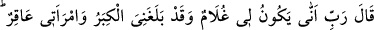
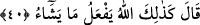

ettiğini hissediyorum.” İşte âyetteki, “Tasdik edici olarak” buyurulması budur.
Yahya, Îsâ’dan altı ay büyüktür. Ayrıca Yahya, Îsâ göğe çekilmeden önce
öldürülmüştür.
“Ve efendi olarak”; bu, “tasdik edici olarak” anlamındaki sözün devamıdır. Kavmine
başkan olarak, haysiyet ve şerefçe onlardan üstün olarak demektir. Yahya, zamanındaki
bütün insanlardan mutlak olarak üstündü. Çünkü hiçbir hatâya bulaşmamış, hiçbir
günahla kınanmamış, hiçbir mâsiyeti de arzu etmemiştir. Bu özelliklere sahip bir insan
elbette üstündür!
“Nefsine hâkim”; kudreti olduğu halde nefsini bütün şehvetlerden, arzulardan
hapsedici, muhâfaza edici, bunu fazlasıyla ve lâyıkıyla yapıcı demektir. Rivâyete göre
Yahya çocukluğunda bir defasında çocukların yanından geçerken onu oyuna dâvet ettiler.
Dedi ki: Ben oyun için yaratılmadım. “Hasûr”, kudreti varken kadınlardan uzak duran
demektir. Bununla beraber gözünü muhâfaza etmek için evlenmiştir.
“Ve sâlihlerden bir peygamber olmak üzere” Yani varacağı yere vardıktan sonra
kendisine vahyedilecek bir peygamber ve sâlihler içinden yetişmiş bir insan olarak.
Çünkü o peygamberlerin sulbündendir.
Salâh, yani sâlih olma hâli, hayrın her türlüsünü içine alan bir sıfattır. Burada
salâhdan murad, nübüvvet makamı için gerekli olan mertebelerin en üstünü ve
anladığımız salâhın ötesinde bir hâldir.
40. Zekeriya: Rabbim! dedi, bana ihtiyarlık gelip çattığına, üstelik karım da kısır
olduğuna göre benim nasıl oğlum olabilir? Allah şöyle buyurdu: İşte böyledir; Allah
dilediğini yapar.
Zekeriya,
meleklerin
kendisine
nidâ
ederek
bir
oğulla
müjdelemeleri
üzerine:“Rabbim benim nasıl bir oğlum olabilir?” diyerek taaccüb etmiş ve mesrûr
olmuştur. Burada, çocuğunun oğlan olacağının kendisine müjde esnasında bildirildiğine
delâlet vardır. Zekeriya devamla dedi ki: “Gerçekten bana ihtiyarlık çatmışken.”
Yaşım ilerlemiş ve bana tesir etmişken.
Burada yine işaret edilmektedir ki yaşlılık ölümün öncülerinden olması hasebiyle
insanı terketmemek üzere arayıp durmaktadır. Rivâyete göre melekler Zekeriya’yı bir
oğulla müjdeledikleri zaman o doksan dokuz yaşında; karısı da doksan sekiz yaşında
idi.
“Karım da kısırken.” Yani çocuk doğuramaz bir halde iken. (Allah) buyurdu ki: “İşte
öyle! Allah dilerse onu yapar!” Allah âdetin hilâfına olan, insanları şaşkınlık
içerisinde bırakan hârikulâde işleri yapar. Meselâ bir pîr-i fânî ile bir kocakarıdan